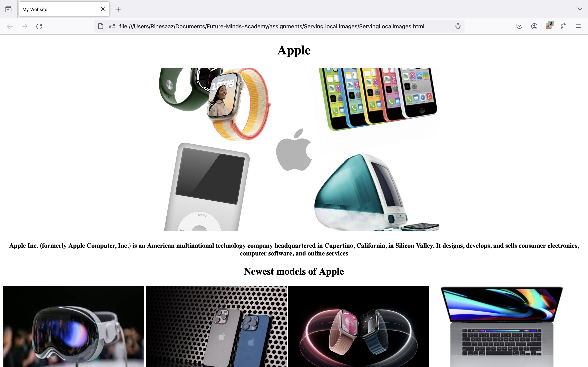

Welcome to the world of Apple! Discover the innovative technology, sleek designs, and user-friendly
interfaces that have made Apple a leader in the tech industry. From the iconic iPhone to the powerful
Mac
computers, Apple products are known for their seamless integration and exceptional performance. Explore
the
wide range of apps, services, and accessories that enhance the Apple experience.

Project 2
This project showcases a simple and user-friendly login form that allows users to securely access their
accounts. With this form, users can enter their username or email and password to log in and gain access
to
the protected content of a website or application. The form is designed to be intuitive and easy to use,
ensuring a seamless login experience for users.
Project 3
In this HTML project, I've created a tribute to my favorite celebrity, Selena Gomez. Explore her
incredible
journey as a singer, actress, and philanthropist. Learn about her inspiring music, iconic fashion, and
the
positive impact she's made in the world. From her chart-topping hits to her empowering messages, Selena
Gomez continues to captivate hearts worldwide.